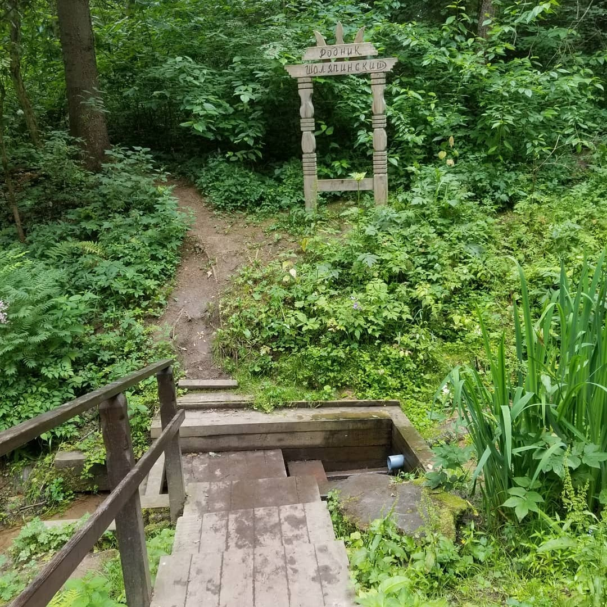
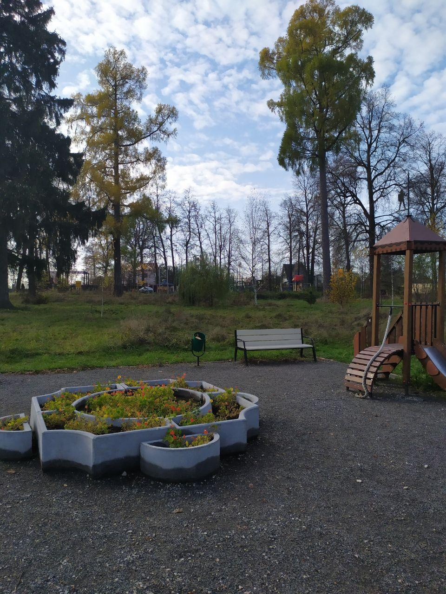

По легенде, Ф. И. Шаляпин, живший неподалеку на даче, во время прогулок приходил сюда за водой. Часть стока родника средней силы выведена в трубу в открытом деревянном срубе, часть вытекает из земли. К источнику ведет деревянный настил. «Шаляпинский» родник расположен у деревни Мешково. Проходим от Киевского шоссе через всю деревню, ставшую большим коттеджным поселком. Ориентируемся по указателям на ул. Рябиновую. От самого дальнего левого углового коттеджа налево в лес, в сторону реки Ликова, ведет натоптанная тропа. В 200 м от коттеджа, направо от тропы идет ответвление к небольшой поляне со скамейкой и родником под крутым противоположным берегом низины. До правого берега речки по тропе остается менее 200 м. Люди считают, что родниковая вода всегда чистая. Проверить это утверждение решили учащиеся 8 класса Школы 2065. Ребята взяли пробы воды и почвы из популярного родника вблизи деревни Мешково. Точность своих анализов ребята повышали тем, что сочетали обычные школьные реактивы и капельные тесты воды для аквариумов с оборудованием инженерных и медицинских классов. Им удалось добиться результатов, достаточно близких к "эталонным", полученным параллельно на факультете почвоведения МГУ и адекватно оценить пригодность воды для питья. По итогам проведенных исследований было сделано заключение, что вода в Шаляпинском роднике чистая, соответствует нормативам для питьевой воды.
Первые упоминания каскаде прудов в окрестностях ныне существующей деревни Мешково датируется XVII веком. Окрестные земли принадлежали роду Валуевых. В начале XVII в. владельцами Мешково значится дворянский род Бредихиных В усадьбу приезжал и гостил Федор Иванович Шаляпин Бывал тут и близкий друг певца — художник Константин Алексеевич Коровин а один из родников в долине реки Ликова сегодня носит название Шаляпинским. Пройти в лесопарк, к роднику и месту, где располагалась усадьба можно из 3 микрорайона города Московского по тропинкам в лес.